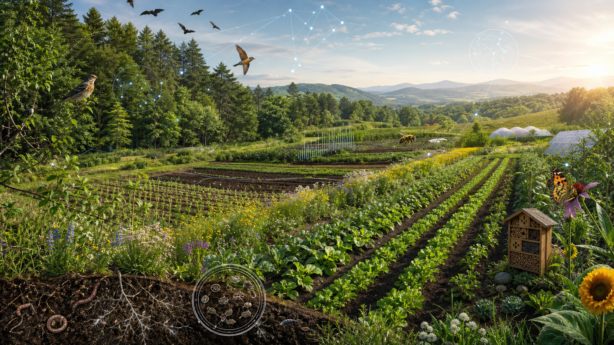
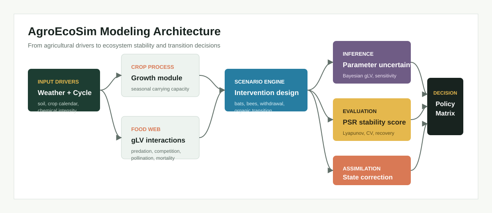
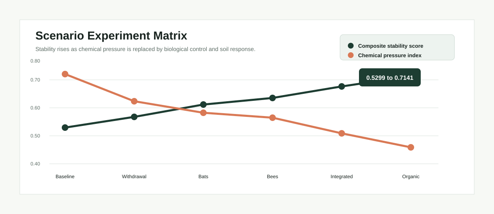
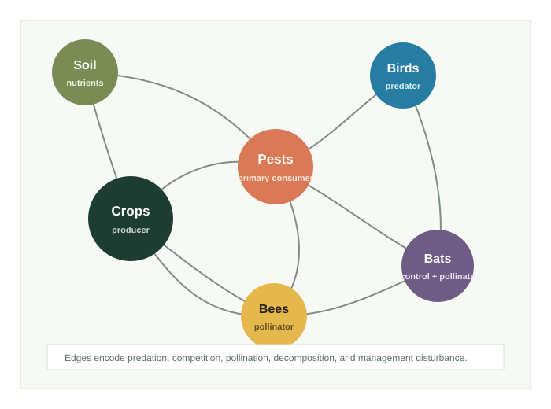
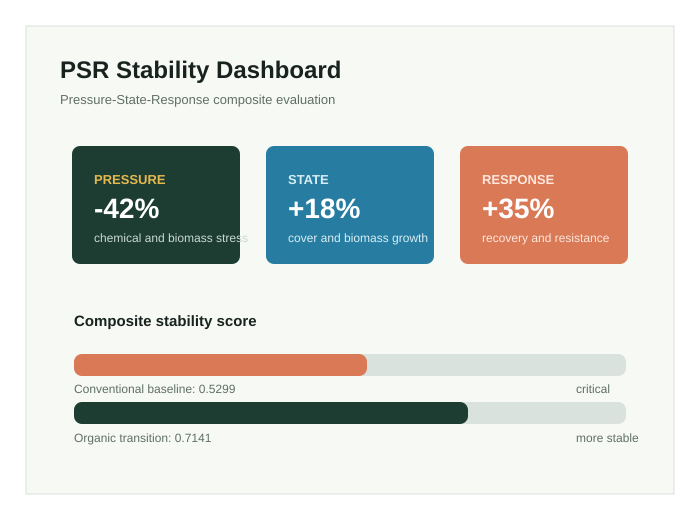

Indicator pipeline
Align ecological observations, normalize positive and negative indicators, and prepare PSR signals.

2025 MCM/ICM Problem E | Meritorious Winner
A research-oriented modeling portfolio for balancing crop productivity, ecological stability, and organic agriculture transition.
The research problem
Reducing chemical inputs is not a single-variable optimization problem. It changes crop growth, pest pressure, predator populations, biodiversity, recovery time, and economic value.
AgroEcoSim connects these effects through a coupled dynamic model and a common stability evaluation framework.
Modeling framework
Five analytical layers turn heterogeneous environmental processes into comparable management scenarios.
Align ecological observations, normalize positive and negative indicators, and prepare PSR signals.
Connect seasonal crop growth with competition, predation, pollination, and chemical disturbance.
Evaluate pressure, state, response, variation, recovery, resistance, and Lyapunov behavior.
Expose interaction uncertainty through parameter intervals, sensitivity analysis, and state updates.
Compare interventions across productivity, ecological stability, chemical pressure, and transition cost.

Research workflow
The repository presents the competition model as a modular research system with explicit interfaces and outputs.
Harmonized ecological signals
Crop and food-web dynamics
Seasonal multi-species trajectories
PSR and stability metrics
Inference and assimilation
Transition pathway comparison
Scenario experiments
Every scenario is represented through the same configuration and evaluated with the same metric set.
Reference system
Seasonal chemical intervention establishes the reference level for productivity and ecological pressure.

Selected results
Dynamic behavior, composite evaluation, and scenario comparison are presented together.


Repository design
The structure separates data preparation, dynamic models, inference, metrics, visualization, configurations, and result artifacts so the analytical workload remains visible.
Return to the project overview ^AgroEcoSim/
|-- configs/
|-- docs/
|-- notebooks/
|-- results/
|-- src/agroecosim/
| |-- data/
| |-- models/
| |-- inference/
| |-- assimilation/
| |-- metrics/
| `-- visualization/
`-- workflows/